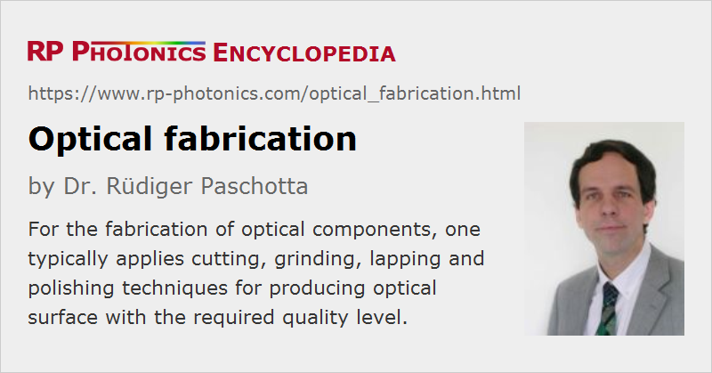

Optical Fabrication
Definition: the fabrication of optical components like lenses, prisms and mirrors
German: Herstellung optischer Komponenten
Categories: general optics, optical materials, methods
How to cite the article; suggest additional literature
Author: Dr. Rüdiger Paschotta
When optical components such as lenses, prisms and mirrors are fabricated in optical workshops, various processes like cutting, grinding, lapping and polishing may be applied for finally producing optical surfaces with high quality.
This article treats mostly the processing of optical glasses, which are the most common optical materials, but also adapted methods for other materials such as plastics and crystalline materials. For more specialized optical components, such as microlenses, gradient-index lenses, diffractive optics and waveguides, please use the corresponding specialized articles.
Fabrication of Optical Elements Made of Glasses
Glass Fabrication
The article on optical glasses explains what kind of glass materials are typically used in optics. In this section, we assume inorganic glasses, distinguished from organic glasses as used for plastic optics.
Optical glasses are fabricated basically by mixing a number of purified compounds in the form of a powder, heating them to produce a glass melt, and slowly cooling them until solidification is achieved. For a high optical quality, highly purified materials are used. Also, they need to be thoroughly mixed to avoid inhomogeneities. The contamination with unwanted substances from any containers needs to be avoided.
A very slow and well controlled cooling process needs to be applied until complete solidification is achieved. During that cooling, the glass can anneal, which means that internal mechanical stress is largely removed. The final density and the resulting refractive index of the glass substantially depend on the annealing rate, which may e.g. be 2 K/h (fine annealed glass) or sometimes even substantially slower. The annealing rate should not only be low enough, but consistently applied for a particular type of optical glass.
Manufacturers often supply optical glasses in the forms of blocks, i.e. as block glass. Other supply forms of raw optical glasses, from which optical components such as lenses or prisms can be made, are large strips and rods. Some suppliers also offer processed forms like plates, cut prisms or pressed blanks.
Production of Blanks
A first step after glass production is the fabrication of blanks, i.e., pieces with roughly the right dimensions and some oversize of e.g. about 1 mm. For volume production, such optical blanks may be produced by embossing or molding processes. For small volumes, one often uses cutting or trepanning (core drilling) from larger glass blocks (block glass delivered by a glass manufacturer).
Special glass cutting machines are available, which typically contain a circular diamond saw. Its blade contains tiny diamonds which are incorporated in a steel core, for example. The diamond particles act as a very hard abrasive material, which is substantially more resistant than typical optical glasses. By using relatively thin blades in a carefully controlled process (e.g. with well defined linear movement of the blade), one can cut glasses with high reliability (i.e., without breaking or other otherwise damaging the glass) and with small loss of material. During the sawing process, the blade is typically cooled with clean water, which also helps to remove the glass dust and thus to avoid inhalation of tiny particles by operators.
Generation
After cutting, one often applies some kind of curve generator for preparing plane or curved surfaces, which come closer to the final shape, e.g. within 0.1 mm. The purpose of generation is essentially that of mechanical machining, but due to the brittle nature of glasses, adapted processing methods need to be applied.
The details depend on the type of optical component. For the generation of lenses, for example, one typically uses cup-shaped grinding wheels and a lip of diamond grit which is held in a metal or resin matrix. Such a process naturally produces spherical surfaces, which can be convex or concave. Our processes are required for producing aspheric lenses. For example, one may apply diamond turning.
Lapping and Polishing
Even a carefully controlled generation process causes some damage at and slightly below the glass surface. Therefore, and not only to reach the final surface accuracy, the top layer of the surface needs to be removed with suitable lapping methods, i.e., with refined kinds of grinding.
One typically starts with loose abrasive lapping for removing the damaged surface part and matching the required surface shape within a few micrometers (equivalent to several optical wavelengths). Here, the material removal rate is relatively high. In several following steps, mostly with pellet lapping one can then apply finer and finer lapping methods (with much lower removal rates). Essentially, and subsequent steps one uses finer and finer lapping agents.
Next, optical polishing is applied until the required optical surface quality is achieved, e.g. with deviations below λ/10 Polishing is a process similar to lapping and can be done with the same kind of machinery, but instead of a diamond grit one typically uses cerium oxide powder in a synthetic pad as a polishing agent.
In some cases, one applies special superpolishing methods for achieving a particularly high surface quality.
Edging
Optical components also often need to be edged, which means that the peripheral regions are properly processed for precise mounting. For example, the outer parts of a lens should allow the easy mounting of the lens with proper orientation of its optical axis.
Adaptation to Different Materials
In order to achieve high quality results with good efficiency, all cutting, lapping and polishing processes need to be adapted to the particular materials used. Optical glasses can have mechanical parameters varying in quite large ranges. In particular, some glasses are rather soft, while others are very hard; some intermediate level of hardness is usually ideal for processing. Some glasses, for example fluoride glasses, can be rather hard to process since they are unusually brittle. At the same time, they may be highly sensitive to humidity, which requires additional precautions.
Note that the selection of optical glasses needs to take into account many other aspects, such as refractive index, chromatic dispersion, availability and price, so that the mechanical properties cannot always be ideal for fabrication.
Crystalline Materials
For the processing of crystalline materials – for example sapphire, semiconductors (for infrared optics), laser crystals or nonlinear crystal materials –, one can largely apply similar processes as for optical glasses, but with adapted parameters and details.
Some additional aspects may have to be observed, for example in some cases the exact axis orientation of the single crystals.
Plastic Optics
Plastic materials, also called organic glasses, are also widely used in optics. Their main advantage is often not the lower material cost (particularly for small parts), but the lower cost of processing due to the applicability of simplified processes. For example, plastic optics can often be made with embossing or molding processes, and this without extensive further processing; that would not work well with inorganic glasses. The resulting optical quality is normally lower than with traditionally processed inorganic glasses, but sufficient for many applications, including even imaging with a surprisingly high quality, e.g. in smartphone cameras. Aspheric and even free-form optics can be made relatively easily.
Volume vs. Custom Optics
Different fabrication methods may have to be applied depending not only on the quality specifications, but also on the required production volumes. For example, custom optics may have to use glass cutting from blocks with relatively large waste, if suitable blanks cannot be made otherwise. Computer-controlled machines may be used for maximum flexibility in various product steps. In some cases, one may have to more extensively use manually controlled processes, since sophisticated automated machinery cannot be set up for small quantities.
Optical Characterization
Due to the typically quite high demands concerning the optical quality, optics manufacturing must be accompanied by accurate optical characterization. For example, one can use optical profilometers for measuring surface topographies. Also, one uses interferometers, e.g. of Twyman–Green type.
Characterization methods may simply be used for quality control, i.e., for identifying problems. They may also be more or less integrated into the fabrication process. Even in largely manual fabrication processes, one often uses measurements of the currently achieved optical surface shape in order to decide on further steps. Computer-controlled equipment may also make use of characterization data in streamlined processes for achieving an attractive combination of quality and production cost, particularly in volume production.
Suppliers
The RP Photonics Buyer's Guide contains 8 suppliers for optics fabrication equipment.
Questions and Comments from Users
Here you can submit questions and comments. As far as they get accepted by the author, they will appear above this paragraph together with the author’s answer. The author will decide on acceptance based on certain criteria. Essentially, the issue must be of sufficiently broad interest.
Please do not enter personal data here; we would otherwise delete it soon. (See also our privacy declaration.) If you wish to receive personal feedback or consultancy from the author, please contact him e.g. via e-mail.
By submitting the information, you give your consent to the potential publication of your inputs on our website according to our rules. (If you later retract your consent, we will delete those inputs.) As your inputs are first reviewed by the author, they may be published with some delay.
See also: optical materials, plastic optics
and other articles in the categories general optics, optical materials, methods
|  |
If you like this page, please share the link with your friends and colleagues, e.g. via social media:
These sharing buttons are implemented in a privacy-friendly way!